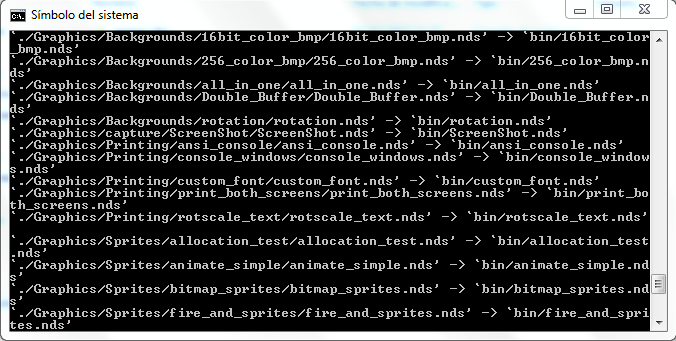

Chrome says
El joc és l'adaptació del clàssic “Simon says” a la consola Nintendo DS. No obstant, i per tal de dotar al projecte d'una mica de personalitat pròpia, canviarem el clàssic disc de quatre colors pel logotip del navegador Google Chrome, emprant els seus quatre colors com a tecles del disc.
Taula de continguts
Practica 1: Preparacio de l'entorn
Instal·lació de l'entorn
Primer hem descarregat l'script de la pàgina web i l'hem executat, instal·lant així l'entorn. A més hem afegit les variables del sistema, i les hem fet permanents.
Instruccions necessaries
wget -O devkit.pl http://downloads.sourceforge.net/project/devkitpro/Automated%20Installer/devkitARMupdate.pl?r=http%3A%2F%2Fsourceforge.net%2Fprojects%2Fdevkitpro%2Ffiles%2FAutomated%2520Installer%2F&ts=1425297393&use_mirror=cznic
sudo perl devkit.pl
echo "export DEVKITPRO=~/devkitPro" >> ~/.bashrc
echo "export DEVKITARM=${DEVKITPRO}/devkitARM" >> ~/.bashrc

Compilació dels exemples
Hem descarregat els exemples i hem vist que alguns que hi ha en la pàgina web no estan als exemples descarregats, com ara l'exemple capture. Als exemples descarregats també hi han alguns que no estan a la web.
Compilació dels exemples
Anem a provar ara alguns dels exemples a ambdós emuladors per tal de comprovar les possibles diferències entre els mateixos, compilant-los amb l'ordre make.
ds_motion

hello_world

Tots els exemples que s'han provat a DesMuMe s'han executat sense cap tipus de problema, no obstant, alguns han fallat a l'emulador no$gba. Com ara, l'exemple 16bit_color_bmp.nds.
Instal·lació a Windows
Per a la instal·lació a una màquina amb sistema operatiu Windows 7, el procés ha sigut simple. Des de la mateixa pàgina web d'on hem baixat el devkitpro per a Linux, s'ha baixat l'arxiu .exe corresponent a la versió 1.5.4. Una vegada baixat, s'ha executat seguint els passos de l'assitent d'instal·lació sense cap tipus de problema.
Una vegada instal·lat, simplement cal anar a la carpeta corresponent devkitpro\examples\nds i compilar els exemples mitjançant l'ordre make.

Practica 2: Bouncing ball
Projecte: Planificació i requisits
Descripció básica
El joc és l'adaptació del clàssic “Simon says” a la consola Nintendo DS. No obstant, i per tal de dotar al projecte d'una mica de personalitat pròpia, canviarem el clàssic disc de quatre colors pel logotip del navegador Google Chrome, emprant els seus quatre colors com a tecles del disc.
Mecàniques
Mentre que la característica principal del joc clàssic consisteix en anar fent més llarga i difícil la combinació de tecles que el jugador té que polsar, Chrome says afegirà també la característica d'un compte enrere. Cada vegada que el jugador faça un error, el comptador baixarà 7 segons, mentre que cada vegada que encerte, pujarà 4 segons (els temps no són definitius). Al ser un temporitzador, el temps anirà baixant segon a segon, l'objectiu del jugador és encertar la seqüència que se li ha dit al menor temps possible amb l'objectiu d'evitar que el comptador arribe a 0.
Un exemple d'una partida
El jugador iniciarà el joc, en la pantalla inferior (tàctil) es mostrarà una imatge, i en la superior un text associat a la mateixa. Si el jugador polsa el botó A (pot variar respecte a la versió final) passarà a la següent imatge i text associat. Amb aquestes imatges (no més de 2 o 3) s'informarà al jugador del context del joc, i del per què del disc amb forma del logo de Chrome: La nostra mare vol gastar el nostre ordinador però, desgraciats de nosaltres, ens hem oblidat d'esborrar l'historial de navegació! Per tal d'evitar que puga tindre accés al mateix, deguem fer el que ens diga Chrome, repetint les seqüències que ens indique. Tenim que aguantar el major temps possible per tal de que no descobrisca la veritat! Després d'aquesta introducció passarem al joc en sí mateix. A la pantalla superior es mostrarà el temporitzador, mentre que a la inferior trobarem el disc de Chrome amb el que tindrem que interactuar. El propi joc ens mostrarà a la pantalla inferior la seqüència que tenim que reproduir, il·luminant les tecles que tenim que polsar en l'ordre al que tenim que fer-ho. Immediatament després el jugador deurà tornar a polsar les mateixes tecles en l'ordre determinat. Si encerta, a la pantalla superior es sumaran els segons corresponents al temporitzador, si falla, es restaran.
Posibles ampliacions
Com a ampliacions, en cas d'acabar el projecte i que ens sobre temps, es podria afegir un menú principal amb altres opcions, a més de la de jugar, com ara un ranking dels millors resultats, segons el número de seqüències correctes fetes fins el moment de que el comptador arribe a 0.
Planificació
Cerca d'informació d'aplicacions semblants.
-
Creació de les imatges i sprites que es gastaran al llarg del joc.
-
Cerca dels sons de les tecles.
-
Temporitzador i algorisme de modificacions de temps.
-
Desenvolupament de la interacció amb les tecles (il·luminació al polsar, reproducció de so al posar).
-
Algorisme de creació de seqüències aleatòries.
-
Proves globals de l'aplicació.
Pràctica 4: Àudio amb Maxmod
Reproducció d'àudio
Aquest primer exercici és introductori. Hem de respondre un parell de preguntes, com ara indicar com incloure la biblioteca Maxmod a un codi i com generar el banc de sons. La primera pregunta és simple, la biblioteca s'inclou com qualsevol altra biblioteca que vaja a ser emprada:
#include <maxmod9.h>
A més a més, caldrà afegir les capçaleres del banc de sons (que ara després indicarem com es genera):
#include “soundbank.h”
#include “soundbank_bin.h”
Pel que fa a la generació del banc de sons, es fa al Makefile, és a dir, es genera a l'hora de compilar el projecte. Concretament, es genera amb aquesta regla del Makefile:
#------------------------------------------------------------
# rule to build soundbank from music files
#------------------------------------------------------------
soundbank.bin : ${AUDIOFILES}
#------------------------------------------------------------
@mmutil $^ -d -osoundbank.bin -hsoundbank.h
Reproducció de fitxers modulars per a música
L'única pregunta d'aquest exercici és simple: Quina diferència hi ha al Makefile entre l'exemple anterior i l'exemple audio_modes per a que al primer els arxius d'àudio estiguen a la carpeta maxmod_data i al segon, a la carpeta audio. La resposta és encara més simple. Al principi del Makefile indiquem quins són els directoris que contenen cada element. Només cal modificar la línia següent:
MUSIC := maxmod_data
La part dreta pel nom del directori on estiguen els arxius de música.
Sincronització d'esdeveniments
Aquest problema ens pregunta per la funció de l'exemple song_events_example que s'encarrega de tractar els missatges enviats pels esdeveniments. La funció és la següent:
mm_word MyEventHandler( mm_word msg, mm_word param ) {
switch( msg ) {
case MMCB_SONGMESSAGE:
if (param == 1) spriteDy = -16;
break;
case MMCB_SONGFINISHED:
break;
}
return 0;
}
Com veiem, és molt simple. Rep dos arguments, el primer és el tipus de missatge a tractar, mentre que el segon ens indica si l'sprite té que botar (ja que té que fer-ho al ritme de la música). En cas que el primer argument siga missatge de la cançó, es comprova si el segon és actiu, si ho és, es canvia la velocitat de l'sprite, si no, s'acaba. En cas de que el primer argument siga un missatge de finalització, no passa res.
L'últim exercici, també d'aquest apartat, ens pregunta per l'exemple song_events_example2 i com és possible que s'identifiquen cinc esdeveniments diferents. La resposta és simple, a la mateixa funció que a l'exercici anterior, en lloc de comprovar si el segon argument és 1, ací es comprova si és 1, 2, 3, 4 o 5. Amb això sabem quin sprite és el que hi ha que actualitzar. La resta, segueix el mateix esquema que l'exercici anterior.
Treball autònom
Com que aquest treball era la incorporació d'un efecte de bot a la pilota, i un tema de música al Bouncing Ball Game que ja s'entregà a la seua tasca corresponent, no adjuntarem el projecte.